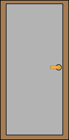

Suurinpiirtein tähän kohdille tulee sivun kaikki haku- ja listausvalikot.
Fontti = Verdana
Koko = 16px
Valinta 1
Valinta 2
Valinta 3
Fontti = Verdana
Koko = 16px.
Hakunapit ja muut pyöristetään
Napin taustaväri = #0091C9
Border-radius = 10
Fontti = Arial
Kuvat näytetään galleriamaisesti


Valmis kuva
